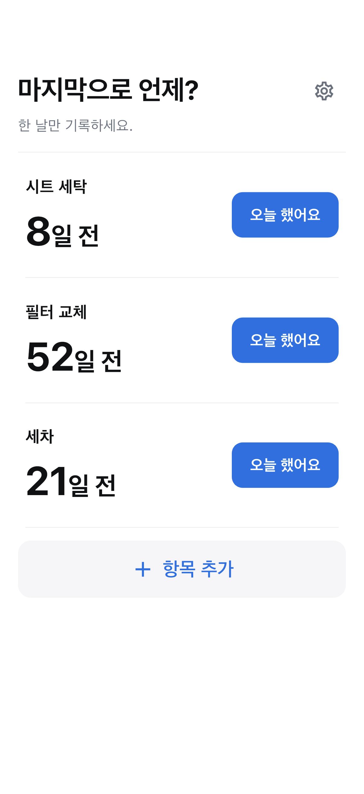

마지막으로 언제? · iOS / Android
청소, 교체, 관리 날짜를 기록하고 얼마나 지났는지 확인하세요.
출시 준비 중

사용 방법
기억하고 싶은 청소·교체·관리를 이름만으로 추가하세요.
오늘 했어요로 바로 저장하고 잘못 누르면 취소하세요.
홈에서 경과 일수를, 항목에서 기록과 평균 간격을 확인하세요.
필요한 기능만
알림이나 권장 주기는 제공하지 않습니다. 평균은 자신의 기록을 기준으로 합니다.
항목과 기록은 기기에 저장되며 오프라인에서도 기록할 수 있습니다. 광고는 인터넷을 사용합니다.
OS 백업에 포함될 수 있지만 복구를 보장하지 않습니다.